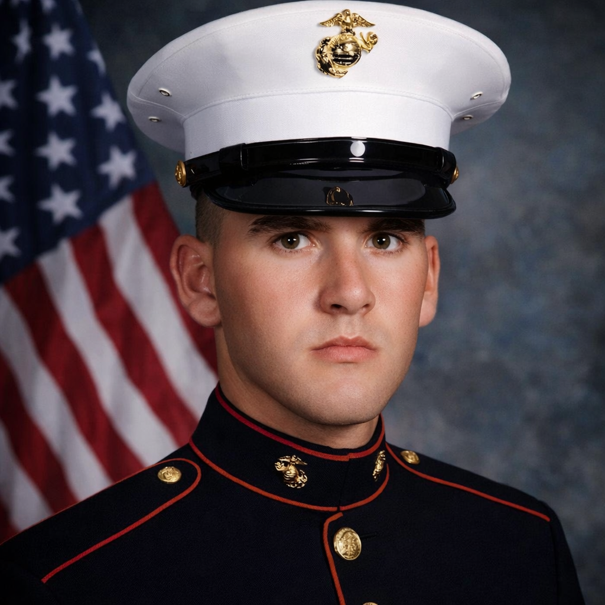

My Story
I joined the Marines because I needed direction and a challenge that would push me to my limits. College felt like a continuation of high school, something I had always struggled with. The Marine Corps gave me a mission, a standard to live up to, and an opportunity to excel in a demanding MOS.
It was a place where grit, toughness, and determination mattered. Every challenge was another chance to prove I could finish what I started. And along the way, I stood beside my fellow Marines—helping each other succeed, just as brothers do.

"Semper Fidelis!"
— Always Faithful